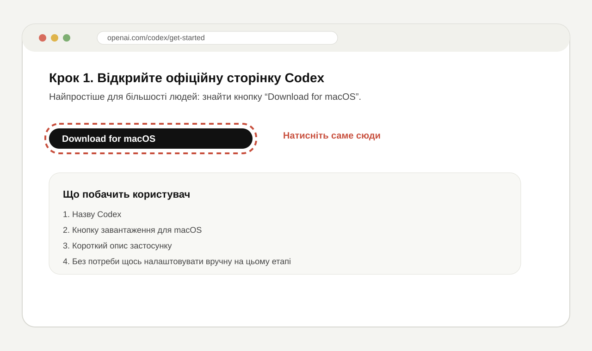
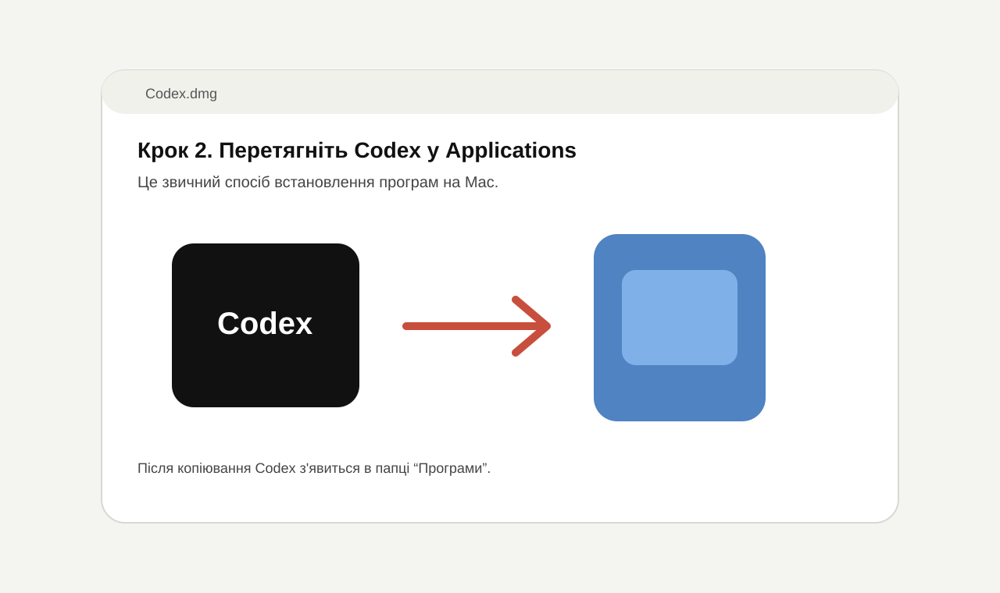
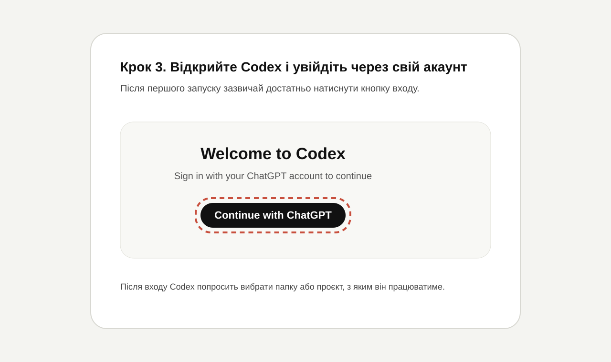

Для більшості людей найзручніше встановлювати Codex не через команди, а як звичайну програму для Mac. Ви просто відкриваєте офіційну сторінку, натискаєте кнопку завантаження, переносите застосунок у папку Applications і входите у свій акаунт.
Крок 1. Відкрийте офіційну сторінку Codex
Відкрийте Safari або Chrome і перейдіть на офіційну сторінку Codex від OpenAI. На ній потрібно знайти кнопку Download for macOS.

Після натискання на кнопку почнеться завантаження файлу для Mac. Зазвичай він потрапляє в папку Downloads.
Крок 2. Відкрийте завантажений файл і встановіть застосунок
Коли завантаження завершиться, відкрийте файл подвійним кліком. На екрані з'явиться стандартне вікно встановлення macOS.

Тепер просто перетягніть іконку Codex у папку Applications. Після цього застосунок буде встановлено.
Крок 3. Відкрийте Codex і увійдіть через свій акаунт
Зайдіть у папку Applications, знайдіть Codex і відкрийте його. Під час першого запуску застосунок попросить увійти у свій акаунт.

Після входу Codex зазвичай просить вибрати папку або проєкт, з яким він працюватиме. Якщо ви просто знайомитеся з програмою, можна вибрати окрему тестову папку на Mac.
Що робити після встановлення
Після першого запуску достатньо переконатися, що:
- Codex відкривається без помилки.
- Ви успішно увійшли у свій акаунт.
- Програма дозволяє вибрати папку для роботи.
На цьому для більшості користувачів встановлення завершене. Далі вже можна спокійно вивчати сам застосунок.
А якщо я хочу встановити Codex через Terminal
Такий спосіб теж існує, але він більше підходить людям, які не бояться командного рядка. Якщо вам важлива простота, краще лишатися на десктопній версії.
Якщо ж ви хочете перевірити, чи Codex доступний у Terminal, можна виконати:
codex --version
Для довідки по командах:
codex --help
А для входу в акаунт через Terminal:
codex login
Що робити, якщо щось не відкривається
- перевірте, чи файл завантажився повністю;
- ще раз відкрийте папку Downloads і файл встановлення;
- переконайтеся, що Codex уже з'явився в папці Applications;
- закрийте і знову відкрийте застосунок;
- у крайньому випадку перезавантажте Mac.
Якщо хочеш, наступним кроком я можу ще зробити окрему статтю чим відрізняється Codex та ChatGPT або короткий гайд про те, що натиснути в Codex після першого запуску.